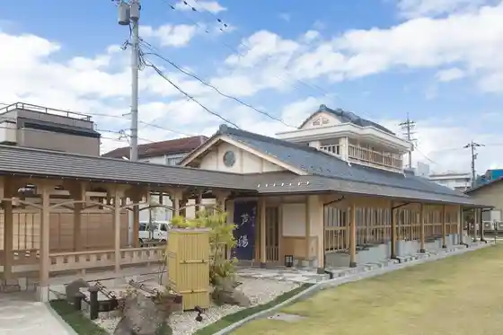
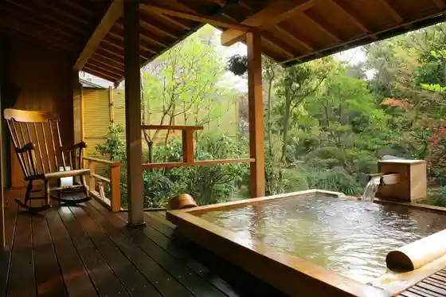
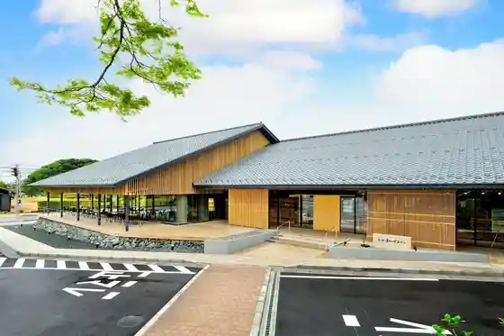
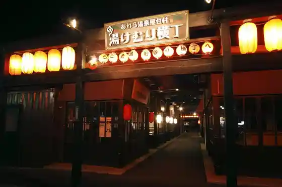

Awara Onsen Machi
Awara, Fukui · 0776-77-1877 · Official / source link
Awara Onsen (Ashinoyu)
Awara, Fukui · 0776-78-6767 · Official / source link

Awara Onsen Gurandia Hosen
Awara, Fukui · 0776-77-2555 · Official / source link

Roadside Station Rennyo Village Awara
Awara, Fukui · Official / source link

Awara Onsen Yatai Village (Yu Kemuri Alley)
Awara, Fukui · 0776-77-1877 · Official / source link

Awara Onsen Seifu So
Awara, Fukui · 0776-77-2500 · Official / source link
Awara Kanko Takushii Awara Gurutto Takushii
Awara, Fukui · 0776-77-1877 · Official / source link
Yoshizaki Gobo Ato
Awara, Fukui · 0776-73-5158 · Official / source link
Matsuya Chiji
Awara, Fukui · 0776-77-2560 · Official / source link
Kakushu Sosaku Experience (Kanetsu Sosaku Forest)
Awara, Fukui · 0776-73-7802 · Official / source link
Echizen Awara Onsen Hasegawa
Awara, Fukui · 0776-77-2164 · Official / source link
Awara Onsen Furutsu Park OKAYU (Budo Kari)
Awara, Fukui · 050-1807-3047 · Official / source link
Hokuriku Fukui Awara Onsen Bisho
Awara, Fukui · 0776-77-2600 · Official / source link
Mori Ni Hisomu Shiro Shrine Tera Shiro Sengoku Gaido Tour
Awara, Fukui · 090-4069-0126 · Official / source link
Kanetsu Sosaku no Mori Art Museum
Awara, Fukui · 0776-73-7800 · Official / source link
Asakura Nashi Kuri Sono
Awara, Fukui · Official / source link
Awara Yume Guruma Park Yume Guruma cafe Fuwari
Awara, Fukui · 090-8265-2741 · Official / source link
Miyatani Ishikiri Ba Ato He Shinpi Pikunikku
Awara, Fukui · 090-4069-0126 · Official / source link
Kita Sekiko
Awara, Fukui · 0776-73-8031 · Official / source link
Kita Sekiko Aze Park Saikuringu Park
Awara, Fukui · 0776-79-0008 · Official / source link
Awara Furutsu Land (Budo, Buruberii Kari)
Awara, Fukui · 090-2839-1152 · Official / source link
Joba Experience
Awara, Fukui · 0776-74-0081 · Official / source link
Yu Raku
Awara, Fukui · 0120-026-193 · Official / source link
Arata Saka
Awara, Fukui · 0776-73-8029 · Official / source link
Fukui Prefectural Ashihara Seinen no Ie
Awara, Fukui · 0776-79-1001 · Official / source link
Awara Naitohoppingu
Awara, Fukui · 0776-78-6767 · Official / source link
Awara Oyatsu Kupon ♪♪
Awara, Fukui · 0776-78-6767 · Official / source link
Mi no Ya Taihei Kaku
Awara, Fukui · 0776-78-5566 · Official / source link
Torimu Park Kanazu
Awara, Fukui · 0776-73-7272 · Official / source link
Awara Onsen Ranchi Suiitsu Meguri Kupon
Awara, Fukui · 0776-78-6767 · Official / source link
Amerikafu Namikimichi
Awara, Fukui · Official / source link
Kofu Yu Ho Beniya
Awara, Fukui · 0776-77-2333 · Official / source link
Hana no Yado Fukuju
Awara, Fukui · 0776-77-2280 · Official / source link
Rien Yonekura
Awara, Fukui · 0776-79-1874 · Official / source link
Onsen Tamagozukuri Experience
Awara, Fukui · 0776-78-4126 · Official / source link
AFLARE
Awara, Fukui · 0776-73-2270 · Official / source link
Rekishigakosa Suru Kanetsu Meguri Tarekazari Rizukuri Experience
Awara, Fukui · 090-4689-3212 · Official / source link
Guraba Tei
Awara, Fukui · 0120-126-150 · Official / source link
Awara Nogaku Farm Ichigo Hausu (Nogaku Sato)
Awara, Fukui · 0776-63-6341 · Official / source link
Takeda Kawa Kayakku Experience
Awara, Fukui · 090-4326-0502 · Official / source link
Shiro Wa So
Awara, Fukui · 0776-78-7000 · Official / source link
Yoshizaki Gobo Rennyo Shonin Memorial Museum
Awara, Fukui · 0776-75-2200 · Official / source link
Awara Berujie Pia Farm Kanko Budo Sono
Awara, Fukui · 0776-79-1830 · Official / source link
Kita Sekiko Aze Hanashobu Sono
Awara, Fukui · 0776-73-8029 · Official / source link
Yokoyama Kofun Gun
Awara, Fukui · 0776-73-5158 · Official / source link
Matsurigoto Ryu Kaku
Awara, Fukui · 0776-77-3100 · Official / source link
Fujino Gen Kuro Memorial Museum
Awara, Fukui · 0776-77-1030 · Official / source link
Awara Onsen Mankitsu Chigatto
Awara, Fukui · 0776-77-2040 · Official / source link
Kimono de Osanpo
Awara, Fukui · 0776-78-6767 · Official / source link
AWARA PHOTOSPOT Awara Roman Kan
Awara, Fukui · 0776-78-6767 · Official / source link
Hakamagi Tsuke Experience (Bachu Gofuku Mise)
Awara, Fukui · 0776-73-0023 · Official / source link
Etsu no Rubiitomato Shukaku Experience
Awara, Fukui · 090-9302-0846 · Official / source link
Hanaya Kana Maiko Geigi Sanni Henshin Puran
Awara, Fukui · 0776-78-6767 · Official / source link
Geigi Tofureai Dento O Asobi Experience
Awara, Fukui · 0776-78-6767 · Official / source link
Okada Ichigo Sono
Awara, Fukui · 090-8334-9410 · Official / source link
Irohayu AWARA
Awara, Fukui · 0776-77-1060 · Official / source link
Awara Kita Kata Onsen hana Yurari
Awara, Fukui · 0776-79-1124 · Official / source link
Yamagishi Farm
Awara, Fukui · 090-2837-5957 · Official / source link
Awara Kyodo History Museum
Awara, Fukui · 0776-73-5158 · Official / source link
no Yu Gaidomappu no Village Mankitsu Tsurizumu
Awara, Fukui · 0776-84-8043 · Official / source link
Kunugi Burial Mound (Ishimuro)
Awara, Fukui · 0776-73-5158 · Official / source link
Echizen Kaga Kenzakai no Kan
Awara, Fukui · 0776-75-1705 · Official / source link
Dentogeino Kan
Awara, Fukui · 0776-78-6767 · Official / source link
Rakuraku Kanko ♪ Tenimotsu O Azuka Ri Sabisu
Awara, Fukui · 0776-73-2290 · Official / source link
Yukata de Machi Aruki
Awara, Fukui · 0776-78-6767 · Official / source link
Kariyasu Yamamori Hayashi Nature Park
Awara, Fukui · 0776-73-8029 · Official / source link
WookYon'sKitchen
Awara, Fukui · 0776-65-6124 · Official / source link
Juraku Forest
Awara, Fukui · 050-1807-3047 · Official / source link
YONETSU-KAN Sasaoka
Awara, Fukui · 0776-74-2221 · Official / source link
Tagaya Sakon no Haka
Awara, Fukui · 0776-73-5158 · Official / source link
Awara Yakusho
Awara, Fukui · 0776-73-1221 · Official / source link